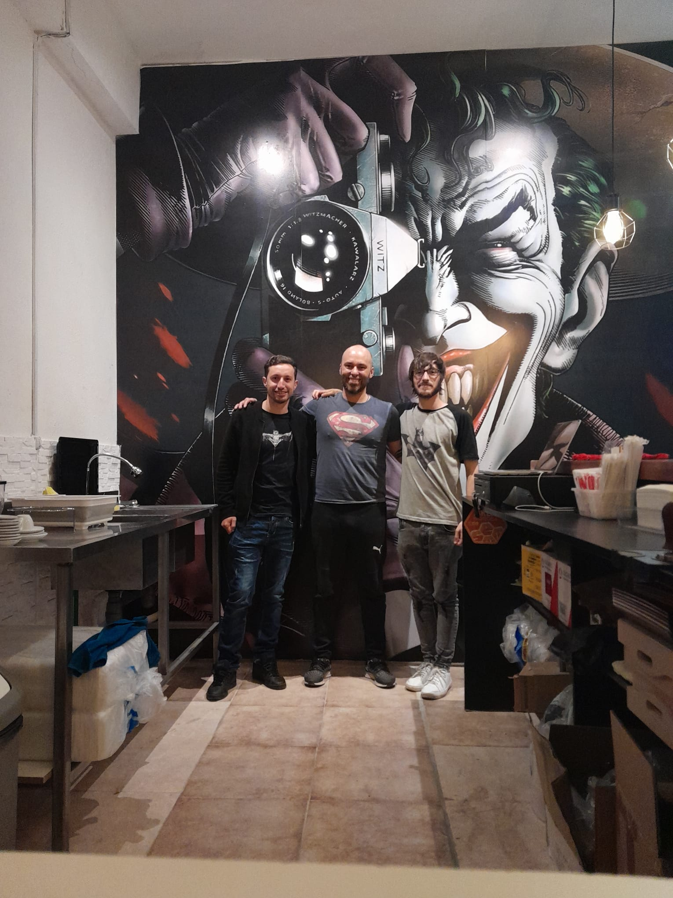

¿Cuantó vales tú como persona? así comienza el discurso más famoso de Victor Krumps, genio de la psicología positiva. La conclusión a la que llega es que la Habilidad y Conocimiento suman, pero la actitud multiplica. Esta es la energía de Mr. Puddin y todo el equipo del Guantelete de la Crítica, cada vez que generan contenido.
Nacido desde la necesidad de proteger su identidad. El alias Mr. Puddin es usado por el influencer uruguayo Federico Falero para generar contenido en el mundo Geek. Su principal habilidad es dar opiniones polemícas que levantan la furia de los fanáticos.